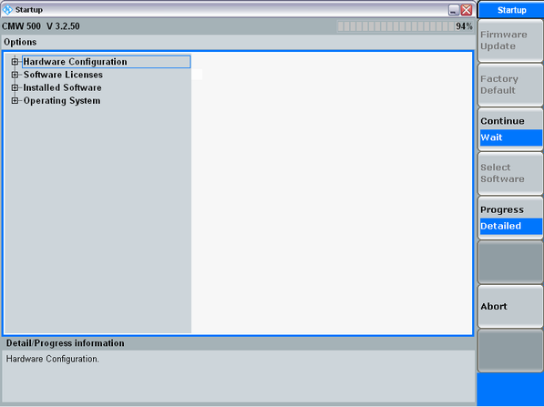

The "Startup" dialog shows the progress of the startup procedure and the available options. Once the startup procedure has been terminated, it is automatically replaced by the dialog opened in the last session.

The "Startup" dialog provides the following control softkeys that you can activate while the startup is in progress.
Checks whether the data stored on the internal hardware of the R&S CMW is up-to-date. If necessary, copies new firmware-specific data to the internal hardware.
Sets the instrument to its factory default state.
- All "Preset" settings. The instrument is optimized for local/manual operation.
- The address information assigned to the instrument (e.g. the IP address or USB product ID/vendor ID/device ID).
- The subinstrument configuration: Only one subinstrument.
Resume or interrupt the startup procedure. "Wait" is appropriate e.g. for a check of the installed hardware and software options, see "Progress Info / Detailed Info" below.
For future use
- The "Progress Info" is a log of the startup procedure including the loaded software components.
- The "Detailed Info" describes the selected hardware or software option. It contains the name, version, product code and essential technical data of the option.
It is preferable to press "Continue / Wait" to view the "Detailed Info". After the startup procedure is finished and the startup dialog is closed, the detailed option information can be accessed via the "Setup" dialog, see "SW/HW Equipment".
Aborts the startup procedure.
The R&S CMW returns to standby state. Press the standby key on the front panel to reinitialize the startup. See also "Standby Key".